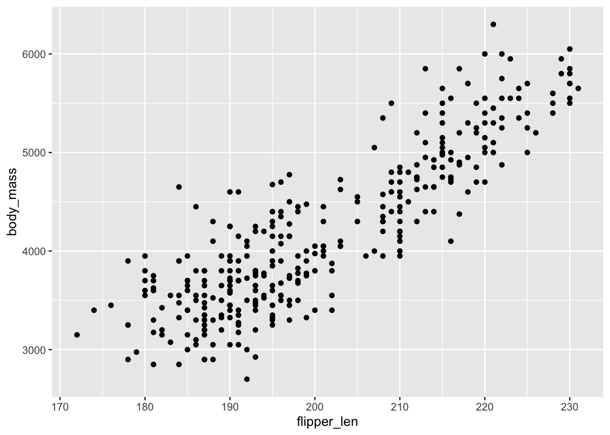
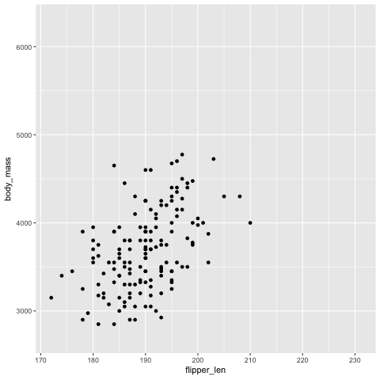
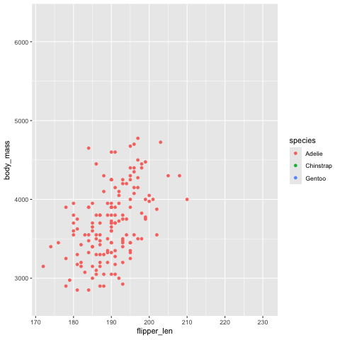
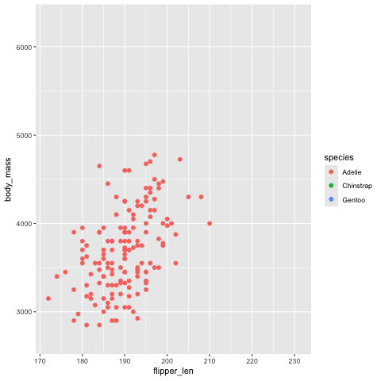
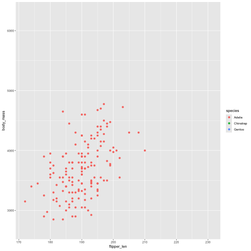
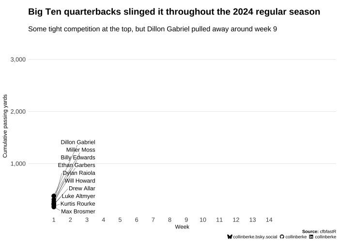

install.packages("gganimate")Notes: Using gganimate to animate plots
til
notes
links
data visualization
Learning more about data visualization animation from the ‘Getting Started’ vignette
I recently created a TidyTuesday data visualization utilizing the gganimate RStats package. While using the package, my focus was to ‘get something up and running quickly’. I wanted to go deeper, though. Below are my notes from diving into the package’s ‘Getting Started’ vignette.
Note
This post is written in the spirit of publishing more frequent blog posts. It’s a bit of a scratchpad of ideas, concepts, and ways of working that I found to be useful or interesting. As such, what’s here is lightly edited. Be aware: there will likely be spelling, grammatical, or syntactical errors along with some disjointed, incomplete ideas.
What is gganimate?
gganimate is an extension ggplot2 package that builds on the grammar of graphics. It provides an API to create animations by adding additional grammar classes, which utilizes syntax similar to ggplot2. The package provides the following family of functions to apply these new grammar classes:
transition_*()view_*shadow_*()enter_*()/exit_*()ease_aes()
Check out the package’s README. It contains a more in-depth definition of each family of functions.
To get started, we just need to install gganimate by running the following in our console.
Then, we make the package available in our R session by adding in our file’s setup code chunk (along with the other packages we seek to use):
What are the key ideas/functions of gganimate?
gganimate implements several key concepts within its API to create animated data visualizations. These include:
- transitions
- easing
- labelling
- object permanence
- entering and exiting
- rendering
In this post, I provide two examples to highlight the key ideas implemented in gganimate. The first will seek to animate a data visulization of the penguins data set, and it will be used to demonstrate how each key idea is implemented within the package. The second will be an extension of the docs, where I visualize some NCAA Big Ten college football data. The examples here will closely resemble what’s already documented in the package’s vignette. As such, I highly suggest reviewing the package’s docs in addition to these notes.
Let’s start with the penguins data set, where we can create a static scatterplot of flipper_len by body_mass. In other words, we want to answer the question: how do bigger flippers relate to a penguin’s mass? (i.e., are penguins with longer flippers heavier?).
vis_flip_mass <- ggplot(
penguins,
aes(flipper_len, body_mass)
) +
geom_point()
vis_flip_mass
Great! We have now a static plot to animate.
Transitions
Transitions is the first concept to know when using gganimate. The terms/key functions include:
The
transition_states()function creates transitions based on some discrete variable within your data. That is, it’s main purpose is to split the data into various frames, which are then later complied into a.giffile. In the example here, we’re splitting by thespeciesvariable.tweening: a calculation performed to ensure the transitions between each state of the animation are smooth.
Here’s how we create the transitions utilizing the transitions_states() function, outputted as a .gif file.
vis_flip_mass_trans <- vis_flip_mass +
transition_states(
species,
transition_length = 2,
state_length = 1
)
vis_flip_mass_trans
Note
Where’s the .gif?
I noticed gganimate opens Preview (I’m on a Mac) after rendering the .gif file. As such, all you see is a collection of static plots. This didn’t allow me to ‘see’ the animation.
gganimate writes the .gif file to a temporary directory. The tempdir() function can be used to print the file path of the temporary directory used for the current R session. This file path can then be used to point a web browser to the location of the .gif file. This video does a pretty good job highlighting how to do this using Google Chrome.
The anim_save() function can be used to save the .gif file wherever is most convenient.
Easing
Easing is the next key concept to know when using the gganimate package.
- Easing: a calculation that takes place to create intermediary data for the tweening to occur. In other words, it’s a calculation to specify the velocity of change taking place between the transitions. gganimate has various types of easing that can be applied to the transitions. gganimate’s
ease_aes()function is used to specify the different types of easing.
Here are a few examples applied to our penguins scatterplot:
vis_flip_mass_trans +
ease_aes("quintic-in-out")vis_flip_mass_trans +
ease_aes("cubic-in-out")vis_flip_mass_trans +
ease_aes("quadratic-in-out")vis_flip_mass_trans +
ease_aes("exponential-in-out")A key point here is you have to specify the type of easing function to use, along with a modifier. You can read more about what’s available by viewing the ?ease_aes function’s documentation. Many combinations are available.
Labelling
The ability to add labels to our animations is the next key concept to know. gganimate makes it easy to show dynamic labels. This is due to the package providing glue like syntax for plot labelling. For instance, let’s say we wanted to include the type of penguin species within the title to match the current state of the data being shown. This can be done by doing the following:
vis_flip_mass_trans +
labs(
title = "Flipper length and body mass for {closest_state} penguins"
)
gganimate also makes other transition variables available for labelling. These include frame and nframes. Check out the docs for more information and additional examples.
Object Permanence
Object permanence is another important concept to consider, especially as it relates to the semantics and validity of your plot. I think of object permanence like this: data points may not be connected, so the animation applied should avoid implying a connection. This isn’t true in all cases (i.e., timeseries data). However, it’s important to consider that if you have distinct classes in your data, the animations should make this clear. In the context of the penguins example, the different penguin species are not related, but with how the animation morphs to different species implies that they are connected–this is not true for this data.
As the docs mention, we need to tell gganimate to not morph observations between different categories in our data to make it clear that observations are not connected. The docs provide two suggestions for fixing this: add an aesthetic to distinguish between the groups or set the group directly. So, let’s apply the doc’s preferred fix to our example: set the group directly.
ggplot(penguins, aes(flipper_len, body_mass)) +
geom_point(aes(colour = species, group = 1L)) +
transition_states(
species,
transition_length = 2,
state_length = 1
) +
ease_aes("cubic-in-out")
Now the transitions make it a little more clear that these data are separate and not connected. This is done utilizing color and the different transitions states. Despite our best efforts, though, a different type of transition might make these more clear. This is where entering and exiting can be applied.
Entering and Exiting
As the docs mention, another alternative to fix our problem above is to provide transitions to have data appear and disapear. This is where the enter_*() and exit_*() family of functions become useful.
Let’s apply some of these functions to our penguins plot. Here’s a few examples:
anim <- ggplot(penguins, aes(flipper_len, body_mass)) +
geom_point(aes(colour = species), size = 2) +
transition_states(
species,
transition_length = 2,
state_length = 1
)
anim +
enter_fade() +
exit_shrink()
anim +
enter_grow() +
exit_recolour(colour = "#000000")Rendering
Now that we’ve settled on the specifics of our animation, we need to consider the rendering of the animation. Indeed, if we don’t want to think about it, the default rendering options are a good start for most situations. However, gganimate provides functionality to modify the rendering of the animation for cases where we want flexibility. Let’s highlight some of these options.
An animation’s number of frames and frame-rate is established at rendering. The animate() function runs when an animation is printed, and as a result, default arguments are passed to specify the properties of the rendering. These include:
-
nframes: number of frames. -
fps: the frames/sec. -
dev: the device to render each frame (e.g.,.png). -
renderer: the function used to perform the rendering.
If you have very specific needs for the outputted animation, ... are available, and you can call animate() with these specific options specified. In the background, gganimate uses gifski to combine each frame into a gif file.
Indeed, in most cases a .gif file is what you’ll need. However, gganimate provides additional rendering functions. Take for example BlueSky. At least at the time of writing this post, the platform doesn’t support the inclusion of user created .gifs within posts. So, a video file is needed to share your post. av_renderer() can be used to output a video file of your animation. The docs have a pretty good example of how to do this.
Just like with ggplot2, you can specify dimension options like height and width, along with res (i.e., resolution). For instance:
anim <- anim +
enter_grow() +
exit_recolour(colour = "#000000")
animate(
anim,
width = 500,
height = 500,
res = 50
)
Saving your animation is simple. Use anim_save() to do this.
Building on the docs
These notes aim to build on the docs. To do this, let’s create an additional example applying what we learned. I work with timeseries data, so let’s create an example animating this type of data.
The 2025 college football season is upon us. I’m a Nebraska fan. So let’s take a look at some Big Ten quarterback passing yards from last season. Specficially, let’s create an animation of cumulative passing yards for each week.
Here’s some code to get and transform this data. It utilizes a package from the SportsDataverse, cfbfastR to get the passing data for all Big Ten quarterbacks. For the sake of brevity and because data transformation is not the main focus of this post, I won’t go into detail explaining each step. Nonetheless, here’s the code needed to get and transform the data for our the following example:
data_fb_pass <- map_df(
1:14,
\(week) {
Sys.sleep(3)
cfbd_game_player_stats(
year = 2024,
week = week,
conference = "B1G",
category = "passing"
) |>
mutate(week = week, .after = game_id)
}
)regular_qbs <- data_fb_pass |>
count(team, athlete_name, sort = TRUE) |>
filter(n > 5) |>
pull(athlete_name)
data_qbs_pass <- data_fb_pass |>
filter(
conference == "Big Ten",
athlete_name %in% regular_qbs
) |>
select(week, team, athlete_name, passing_yds) |>
group_by(team, athlete_name) |>
complete(week = 1:14, fill = list(passing_yds = 0)) |>
arrange(team, athlete_name, week) |>
mutate(
cume_pass_yds = cumsum(passing_yds)
)
top_qbs <- data_qbs_pass |>
arrange(desc(cume_pass_yds)) |>
filter(cume_pass_yds > 2500) |>
pull(athlete_name) |>
unique()
data_top_qb_pass <- data_qbs_pass |>
filter(athlete_name %in% top_qbs)With the data transformed, we start by creating a static plot. I do a little abstracting here by setting color scale values as it’s own variable: color_values.
color_values <- c(
"Dillon Gabriel" = "#007030",
"Billy Edwards" = "#E21833",
"Will Howard" = "#A7B1B7",
"Kurtis Rourke" = "#990000",
"Ethan Garbers" = "#2774AE",
"Drew Allar" = "#6CACE4",
"Max Brosmer" = "#7a0019",
"Dylan Raiola" = "#d00000",
"Miller Moss" = "#FFCC00",
"Luke Altmyer" = "#FF5F05"
)Then, the static plot, vis_qbs_pass is created using ggplot2.
vis_qbs_pass <- ggplot() +
geom_line(
data = data_top_qbs_pass,
aes(
x = week,
y = cume_pass_yds,
colour = athlete_name,
group = athlete_name
),
linewidth = 2.5
) +
geom_point(
data = data_top_qbs_pass,
aes(
x = week,
y = cume_pass_yds,
group = athlete_name
),
size = 3.5
) +
geom_text_repel(
data = data_top_qbs_pass,
aes(
x = week,
y = cume_pass_yds,
group = athlete_name,
label = athlete_name
),
force_pull = 0,
hjust = 1,
direction = "y",
nudge_x = 2.5,
segment.size = 0.2,
min.segment.length = 0,
size = 4
) +
scale_color_manual(values = color_values) +
scale_x_continuous(
breaks = c(1:14),
expand = expansion(mult = 0.1)
) +
scale_y_continuous(labels = scales::label_comma()) +
labs(
title = "<strong>Big Ten quarterbacks slinged it throughout the 2024 regular season</strong>",
subtitle = "Some tight competition at the top, but Dillon Gabriel pulled away around week 9",
caption = glue("<strong>Source:</strong> cfbfastR<br>", add_socials()),
y = "Cumulative passing yards",
x = "Week"
) +
theme_minimal() +
theme(
plot.title = element_textbox_simple(size = 18),
plot.subtitle = element_textbox_simple(size = 14),
plot.caption = element_textbox_simple(halign = 1, vjust = -5),
legend.position = "none",
panel.grid.minor = element_blank(),
panel.grid.major.x = element_blank(),
axis.text = element_text(size = 12)
)Now the transitions_reveal() function is used to split the data into frames based on some variable within the data. In this example, we use the week variable for our transitions.
anim_top_qbs <- vis_qbs_pass +
transition_reveal(
week
)At this point, it’s about setting output options for our animation. The first is to specify the plot object we want to animate: anim_top_qbs. The duration option is then set to specify the animation’s length, in seconds. fps, or frames per second, follows. Then, the size of the animation is configured with the width and height options. height and width are represented in terms of pixels, though animate() makes a units argument available if you want to use some other unit to specigy the size. Lastly, we set a resolution value to specify the quality of the images used to make up the animation.
Note
Keep front of mind where the output is intended to end up, as the options you select will dictate the animation’s size (i.e., KBs or MBs). This will help you make decisions in regards to duration and fps. Indeed, high-quality, smooth animations look great. However, if intended to be embedded within a blog or website, you may need to make a tradeoff between quality, size, and frames of the animation to limit the size of the final .gif.
animate(
anim_top_qbs,
duration = 15,
fps = 15,
height = 500,
width = 700,
res = 75
)
Awesome! We now have an animated line chart.
Wrap up
This set of notes aimed to be a review of the ‘Getting Started’ vignette for the gganimate package. The key concepts I took away from reviewing these docs include:
- transitions
- easing
- labelling
- object permanence
- entering and exiting
- rendering
In addition, the key functions to get started using gganimate include:
- The
transition_*()family of functions. - The
ease_*()family of functions. - The
enter_*()andexit_*()family of functions. animate()
Indeed, the package provides an abundance of functions and APIs to create any number of bespoke animations for you data visualizations. One just has to take the time to explore and experiment, which I look to do in the future.
This post also provided an additional example to go beyond just reviewing the docs. This example animated time series data of Big Ten QB passing from the 2024 NCAA football season.
If you found these notes useful or are just interested in plot animations, let’s connect:
- BlueSky: @collinberke.bsky.social
- LinkedIn: collinberke
- GitHub: @collinberke
Reuse
Citation
BibTeX citation:
@misc{berke2025,
author = {Berke, Collin K},
title = {Notes: {Using} Gganimate to Animate Plots},
date = {2025-08-23},
langid = {en}
}
For attribution, please cite this work as:
Berke, Collin K. 2025. “Notes: Using Gganimate to Animate
Plots.” August 23, 2025.